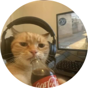

Minhas redes sociais
Quem sou eu?

Meu nome é Gatinho Laranja, sou uma desenvolvedora em formação,
com foco em front-end e experiência em HTML, CSS e JavaScript.
Tenho base em lógica de programação e estou em constante aprendizado,
explorando conceitos como orientação a objetos e análise de sistemas.
Como falar comigo?
 /YouTube
- Se inscreve lá no meu canal do YouTube.
/YouTube
- Se inscreve lá no meu canal do YouTube. /GitHub - Acesse meu repositório público no GitHub.
/GitHub - Acesse meu repositório público no GitHub. /Instagram - Me segue lá no Instagram.
/Instagram - Me segue lá no Instagram. /LinkedIn - Me adiciona lá no LinkedIn.
/LinkedIn - Me adiciona lá no LinkedIn. /X - Me segue lá no X.
/X - Me segue lá no X. /Facebook - Me acompanha lá no Facebook.
/Facebook - Me acompanha lá no Facebook.